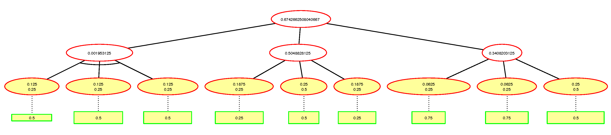

1. Introduction
This documentation reviews a case study by Kodali et al. (2016) on using IoT technologies for a security and home automation system which leverages Wi-Fi to notify users of unauthorized access and manage applications. The document also assesses an Attack-Defense Tree (AD) in a System of Systems (SoS) using distributed devices, sensors, cameras, and appliances connected to a central hub. This approach aligns with the ABCDE model's SoS concept, enabling autonomous yet collaborative home automation and security.
2. Potential vulnerabilities:
- Weak Authentication: IoT devices often have weak passwords, making them vulnerable to brute force and credential stuffing attacks. Sicari et al. (2015) highlight that unchanged default credentials provide easy access for attackers.
- Lack of Encryption: Unencrypted communication between IoT devices and their controllers leaves data vulnerable to interception. Alrawais et al. (2017) emphasize that insufficient encryption in IoT systems is a major risk, as attackers can easily perform man-in-the-middle attacks on unencrypted communications.
- Unpatched Software/Firmware: Many IoT devices have outdated firmware, making them vulnerable. Kolias et al. (2017) show how this contributed to the Mirai botnet attacks, which targeted IoT devices with unpatched firmware in DDoS attacks. Bhardwaj et al. (2024) note that IoT firmware distribution through support portals can enable unauthorized access and reverse-engineer embedded passwords.
- Insufficient Access Control: Weak access control mechanisms permit unauthorized access to IoT networks. According to Zarpelão et al. (2017) vulnerability of IoT systems to intrusion due to inadequate access control, allowing attackers to exploit gateway weaknesses and gain system control.
- Denial of Service: IoT systems with limited computational power are vulnerable to DoS attacks. Sicari et al. (2015) emphasize that IoT devices with limited resources are particularly vulnerable to DoS attacks, potentially disrupting the entire system's functionality. A DoS attack on IoT devices can significantly reduce their storage and network capabilities, leading to performance degradation and potential operational harm (Bhardwaj et al., 2024).
- Physical Tampering: IoT devices in public areas are vulnerable to physical attacks. Roman et al. (2011) emphasize the risk of tampering, as attackers can access and inject malicious code.
- XSS Attacks: Potential XSS vulnerabilities could enable malicious software to enter the website portal, potentially affecting IoT devices. The use of scripts can compromise the privacy and integrity of device owners, allowing unauthorized access to data and modifying its functionality (Bhardwaj et al., 2024; Chui, 2023).
- Weak passwords: IoT device security is compromised by weak or hard-coded passwords, often reused, increasing attack likelihood (Fortinet, 2023).
3. Attack-Defense Tree Structure:
Root Node: Compromise Smart Home Security System (Main Attack Goal)
Sub-goals:
- Compromise Hub/Controller (OR): Weak authentication, insecure protocols, physical tampering.
- Compromise IoT Devices (OR): Exploit vulnerabilities, data traffic capture, device spoofing.
- Network-Level Attacks (OR): DoS attacks, MitM, weak router configurations.
- Client-Side Injection: XSS via the website portal.
Figure 1: AD Tree from an IoT and the various methods it can be compromised with possible mitigation, created using ADTool 1.4 (2015).
4. Quantitative Evaluation of Security Vulnerabilities:
Quantitative evaluation involves assigning probabilities or weights to each attack vector, calculating the overall risk exposure based on the Likelihood of Attack Success. Rios et al (2020) utilized attack trees using probability of success to examine risk management in smart grids.
Figure 2: AD Tree showing probabilities of attacks and mitigation, using ADTool 1.4 (2015).
5. Defense Countermeasures (Defense Nodes):
- Hub Compromise: Use strong authentication and encrypted protocols Use strong authentication and encrypted protocols (e.g., WPA3, TLS), and update the firmware regularly.
- Device-Level Attacks: Implement end-to-end encryption, device anomaly detection, and firmware updates.
- Network-Level Attacks: Apply firewalls, network segmentation, NIDS, and limit remote access.
- Client-Side Code Injection: Validate input and whitelist to block HTML/JavaScript. WAF filters requests and encodes output before rendering (PortSwigger, 2023; Yakdan, n.d.).
6. Conclusion
The vulnerabilities in IoT networks and Systems of Systems (SoS) are complex, requiring robust security protocols across devices and networks. Addressing these requires improved authentication practices, firmware updates, encryption standards, and effective access control mechanisms. This approach reduces vulnerability and enhances security in an increasingly connected world.
Authors:
- Anja Kosar: anja-kosar.github.io
- Amrol Miah
- Syed Imran: https://syed-ali-2014.github.io/e_portfolio/
- Mohammed Younes: my23007.github.io